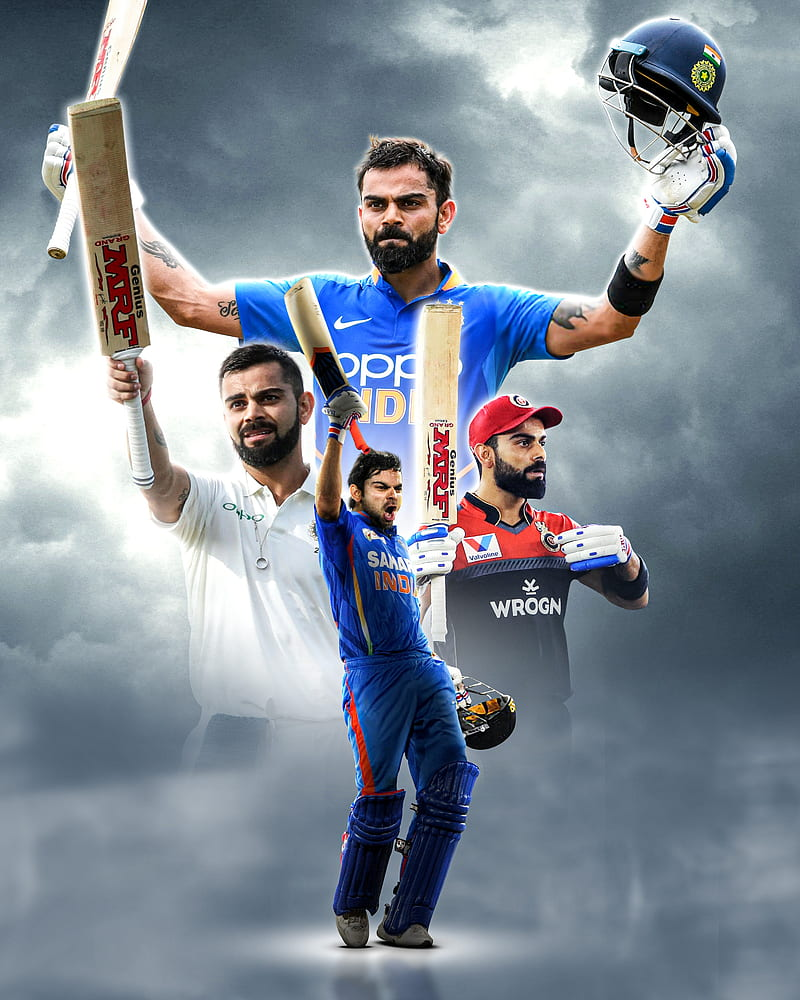

About Virat Kohli

Virat Kohli is an Indian cricketer, born November 5, 1988, in Delhi, who made his international debut in 2008 and has become one of the most consistent run-scorers in modern cricket history. He plays for India in Test and ODI cricket and represents Royal Challengers Bengaluru (RCB) in the IPL.
Career Snapshot
| Category | Details |
|---|---|
| Born | November 5, 1988, Delhi |
| International Debut | 2008 |
| Formats Played | Test, ODI (retired from T20Is after 2024 T20 World Cup win) |
| IPL Team | Royal Challengers Bengaluru (RCB) |
| Batting Style | Right-handed batter |
| Bowling Style | Right-arm medium |
Captaincy Journey
Kohli led India across formats for several years, known for his aggressive, fitness-driven approach to captaincy that reshaped the team's culture. He managed captaincy across all formats of the game and retired from the T20I format following India's win at the 2024 T20 World Cup. Though no longer captain, he remains a senior figure the team relies on for experience in big tournaments
Playing Style
Known as the "Chase Master," Kohli built his reputation on his ability to anchor and finish run-chases under pressure in ODIs, combined with sharp fielding and relentless fitness standards that influenced a generation of Indian cricketers to train harder.
IPL & Current Form (2026)
Kohli has played 283 matches in his IPL career, scoring 9,336 runs at an average of 40.42, with 9 centuries and 68 half-centuries. In the 2026 season, RCB clinched their second consecutive IPL title, with Kohli playing a starring role in the final against Gujarat Titans.
Legacy
Kohli's influence extends beyond his statistics — his intensity, fitness culture, and consistency across formats have made him one of the defining cricketers of his generation, frequently compared to legends like Sachin Tendulkar for his record-chasing consistency.